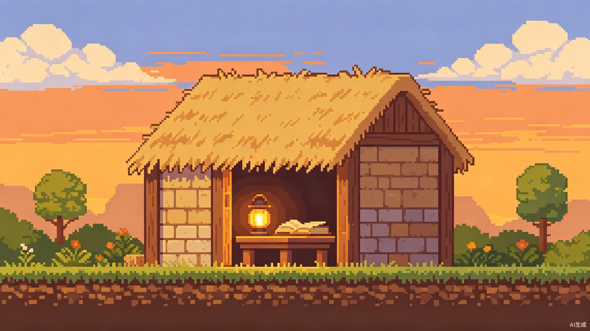

返回
知阅
词堂
知阅
词堂
二年级AI速读训练
0
阅读篇数
0
累计分钟
0
平均正确率

我的茅草屋
再阅读 5 分钟可升级成木屋
选择文章
AI实时生成
00:00
隐藏拼音
读完出题
提交答案
0%
正确率
阅读时长
00:00
阅读速度
0 字/分钟
答对/答错
0/0
回看次数
0 次
逐题回顾
AI 错题复盘
回首页
看书房
我的茅草屋
累计阅读 0 分钟
升级路线
继续阅读
AI正在生成文章...